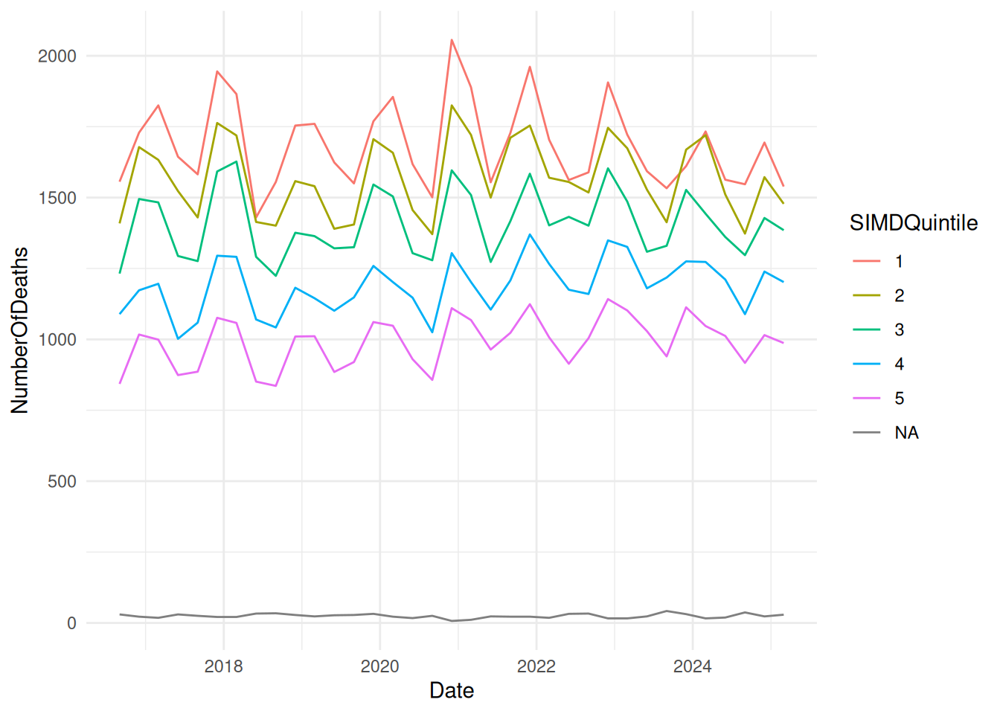

`class(old)`: "grouped_df" "tbl_df" "tbl" "data.frame"
`class(new)`: "tbl_df" "tbl" "data.frame"
`attr(old, 'groups')` is an S3 object of class <tbl_df/tbl/data.frame>, a list
`attr(new, 'groups')` is absentSetup
Let’s do a little bit of package loading, find some interesting data, and then start summarising things:
Data loading
For the first half of the session, we’ll use a real dataset that shows deaths by socioeconomic deprivation. Full details on the PHS opendata page:
Data preview
We’ll do a quick skim() of the data to help you get a better sense of it:
| Name | SMR_SIMD |
| Number of rows | 216 |
| Number of columns | 7 |
| _______________________ | |
| Column type frequency: | |
| character | 1 |
| Date | 1 |
| numeric | 5 |
| ________________________ | |
| Group variables | None |
Variable type: character
| skim_variable | n_missing | complete_rate | min | max | empty | n_unique | whitespace |
|---|---|---|---|---|---|---|---|
| SIMDQuintile | 36 | 0.83 | 1 | 1 | 0 | 5 | 0 |
Variable type: Date
| skim_variable | n_missing | complete_rate | min | max | median | n_unique |
|---|---|---|---|---|---|---|
| Date | 0 | 1 | 2016-09-01 | 2025-06-01 | 2021-01-15 | 36 |
Variable type: numeric
| skim_variable | n_missing | complete_rate | mean | sd | p0 | p25 | p50 | p75 | p100 | hist |
|---|---|---|---|---|---|---|---|---|---|---|
| Year | 0 | 1 | 2020.50 | 2.64 | 2016.00 | 2018.00 | 2020.50 | 2023.00 | 2025.00 | ▆▇▇▇▆ |
| Quarter | 0 | 1 | 7.50 | 3.36 | 3.00 | 5.25 | 7.50 | 9.75 | 12.00 | ▇▇▁▇▇ |
| NumberOfDeaths | 0 | 1 | 1142.17 | 561.45 | 7.00 | 1006.25 | 1291.00 | 1548.50 | 2056.00 | ▃▁▆▇▃ |
| NumberOfPatients | 0 | 1 | 35504.79 | 16888.91 | 490.00 | 33492.75 | 40087.00 | 46016.25 | 59076.00 | ▃▁▃▇▃ |
| CrudeRate | 0 | 1 | 3.01 | 0.79 | 1.04 | 2.73 | 3.04 | 3.40 | 5.58 | ▂▃▇▁▁ |
This dataset is especially good for practising summarising, because there are various different plausible groups that we might like to investigate in it - especially the intersection between SIMDQuintiles (indicating different levels of deprivation) with the various date-based year/season/month groups that might be of interest for health improvement work:
Example time-series

summarise()
This is the standard way of summarising data in dplyr. The description on the dplyr reference page for summarise is admirably clear:
summarise()creates a new data frame. It returns one row for each combination of grouping variables; if there are no grouping variables, the output will have a single row summarising all observations in the input. It will contain one column for each grouping variable and one column for each of the summary statistics that you have specified.
Basic example
A tibble: 1 × 1
sum(NumberOfDeaths)
group_by()
summarise() is especially strong in concert with group_by():
A tibble: 10 × 2
Year `sum(NumberOfDeaths)`Care with groups
Two important things to note here:
-
group_bydoesn’t change how the data looks - just how it behaves: - Each call to
summarise()removes a layer of grouping
A tibble: 1 × 1
sum(\sum(NumberOfDeaths)`)`
Renaming summary columns
You can build simple formulae inside summarise():
A tibble: 10 × 2
Year totalExpressions within summaries
You can also build-up more complex expressions within summarise
A tibble: 10 × 2
Year survivingby()
You can, in another recent change, group inside the summarise itself via .by():
A tibble: 10 × 2
Year survivingThis always returns an ungrouped tibble - so important to know that it’s not a direct substitute for an ordinary group_by()…
summarise() removes one layer of grouping
The most confusing aspect of summarise() is that it removes the bottom layer of grouping each time. Here, we start with our data grouped by Year and Quarter. After summarising, the data is grouped by Year only.:
[1] “Year”
Tools for understanding groupings
group_vars() is just one of a group of functions in dplyr for understanding grouping metadata. Let’s start with some simple grouped data. We can discover the groups that we’re working with using groups():
[[1]] Year
group_vars()
Simpler information is produced by group_vars():
[1] “Year”
group_data() etc
Much fuller information by group_data(), group_rows() and friends:
A tibble: 10 × 2
Year .rows[[2]] [1] 13 14 15 16 17 18 19 20 21 22 23 24 25 26 27 28 29 30 31 32 33 34 35 36
[[3]] [1] 37 38 39 40 41 42 43 44 45 46 47 48 49 50 51 52 53 54 55 56 57 58 59 60
[[4]] [1] 61 62 63 64 65 66 67 68 69 70 71 72 73 74 75 76 77 78 79 80 81 82 83 84
[[5]] [1] 85 86 87 88 89 90 91 92 93 94 95 96 97 98 99 100 101 102 103 [20] 104 105 106 107 108
[[6]] [1] 109 110 111 112 113 114 115 116 117 118 119 120 121 122 123 124 125 126 127 [20] 128 129 130 131 132
[[7]] [1] 133 134 135 136 137 138 139 140 141 142 143 144 145 146 147 148 149 150 151 [20] 152 153 154 155 156
[[8]] [1] 157 158 159 160 161 162 163 164 165 166 167 168 169 170 171 172 173 174 175 [20] 176 177 178 179 180
[[9]] [1] 181 182 183 184 185 186 187 188 189 190 191 192 193 194 195 196 197 198 199 [20] 200 201 202 203 204
[[10]] [1] 205 206 207 208 209 210 211 212 213 214 215 216
reframe()
A recent change in dplyr 1.1.0 is that summarise() now will only return one row per group. A new function, reframe(), has been developed to produce multiple-row summaries. It works exactly like summarise() except, rather than removing one grouping layer per operation, it always returns an ungrouped tibble. The syntax is the same as summarise():
count()
count() counts unique values, and is equivalent to using group_by() and then summarise():
A tibble: 2 × 2
died n
count() is a shorthand for grouping and summarising
That’s roughly equivalent to:
A tibble: 2 × 2
died n
tally()
tally() works similarly, except without the group_by():
A tibble: 1 × 1
nWeighted counts
A possible source of confusion is that adding a column name to either count() or tally() performs a weighted count of that column:
A tibble: 1 × 1
nRoughly equivalent to:
[1] 69647Named arguments
Personally, it seems wise to use named arguments inside count() and tally() to make sure it’s obvious what the column name is doing:
A tibble: 1 × 1
nSorting
count() has a useful sort option to arrange by group size:
A tibble: 125 × 2
syst nControlling column names
And you can name your new count column something more descriptive than n:
A tibble: 125 × 2
syst count_of_somethingEmpty groups
If you want to count empty groups, use .drop:
A tibble: 2 × 2
male n
add_count()
Both count() and tally() have add_ variants, which work like mutate() in that they add a new column containing the count:
A tibble: 1,000 × 2
syst syst_BP_countadd_tally()
add_tally() gives a col with the same value in each row of a group:
A tibble: 6 × 13
Groups: died [2]
male age NEWS syst dias temp pulse resp sat sup alert died n
rowwise()
rowwise() forms groups per row. For example, we could take the average of the three columns in ae_attendances:
A tibble: 12,765 × 7
Rowwise:
period org_code type attendances breaches admissions mean
many dplyr verbs respect grouping
Compare and contrast with the results we obtain if we omit rowwise(), where the mean column contains the averages of the three columns overall, rather than for each date and organisation:
A tibble: 12,765 × 7
period org_code type attendances breaches admissions mean
c_across()
There’s also a c_across() function to select columns that looks really promising for rowwise() work, but bafflingly it is extremely slow here, taking 50x longer than the equivalent mutate(). This is a known issue - “particularly for long, narrow, data”. So this code is switched off and provided here for information only - although do feel free to try it out if you don’t mind a ten second wait.
Summary functions: nth() / first() / last()
Get the nth, first, or last values. Very useful inside a summarise() or similar when you want to be sure that you’re going to return a sensible result.
A tibble: 4 × 2
speaker comment
1 steve b
2 emma c
3 steve d
4 emma f
Acknowledgments
I’m extremely grateful to Pauline Ward (PHS) for suggesting the dataset used for this session.